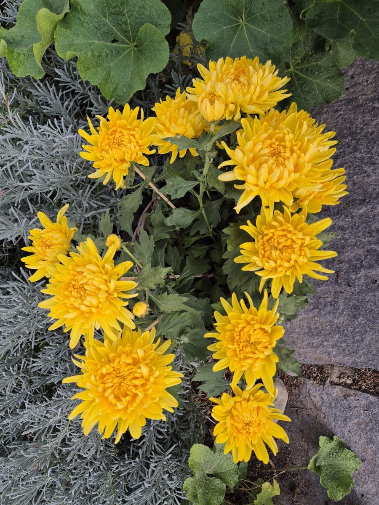

Sarah's Lieblingsblume
Laura's Lieblingsblume


Lateinischer Name: Chrysanthema
Lateinischer Name: Papaver rhoeas
Umgangssprachlicher Name:
Garten-Chrysantheme
Umgangssprachlicher Name:
Mohnblume
Die Garten-Chrysantheme ist meine Lieblingsblume, weil ...
Die Mohnblume ist meine Lieblingsblume, weil sie mich bei jeder Begegnung zum Anhalten und Geniessen einlädt.